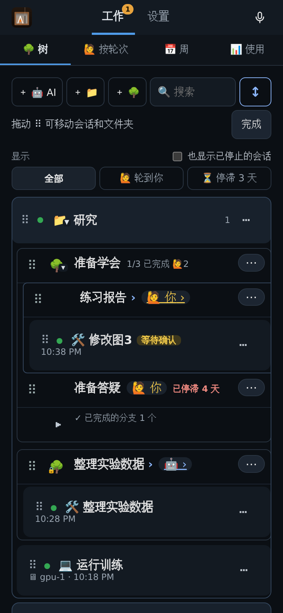
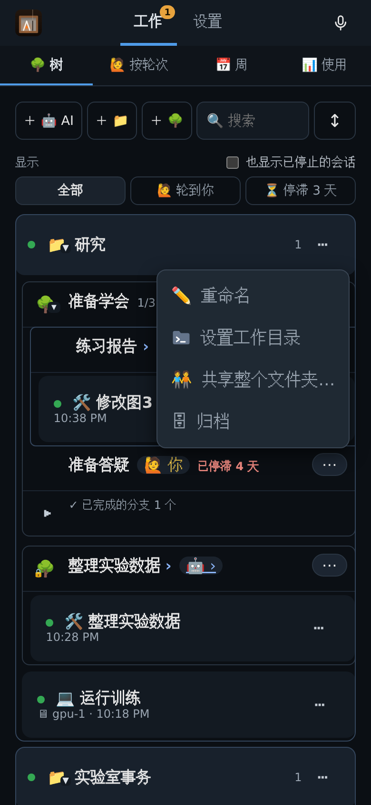
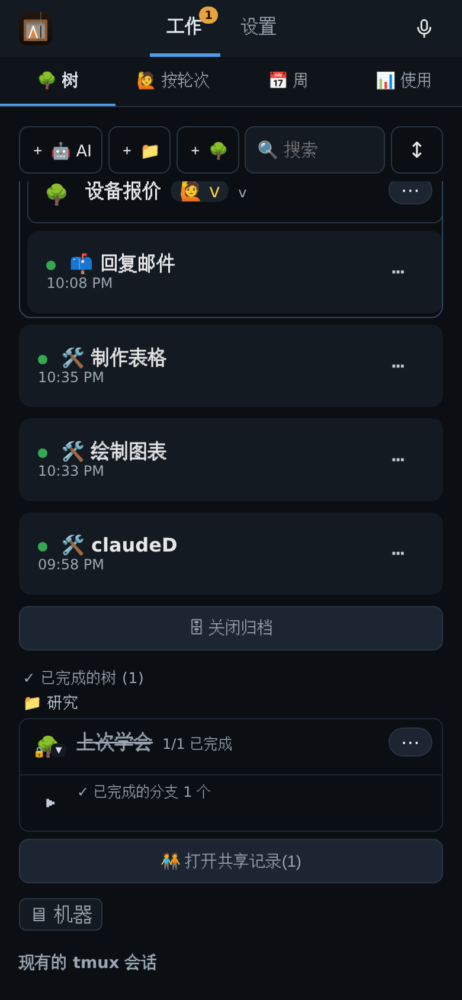
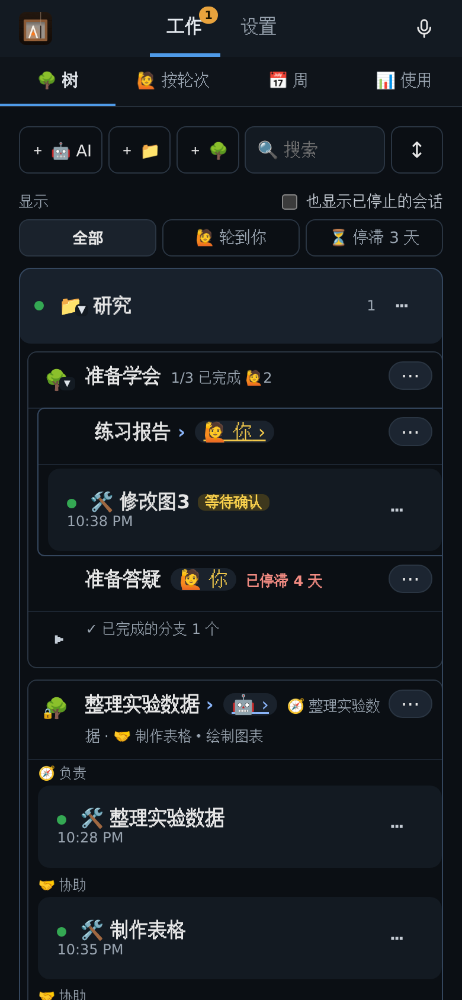
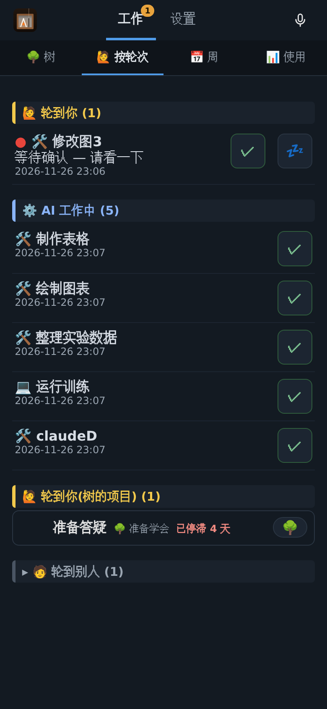
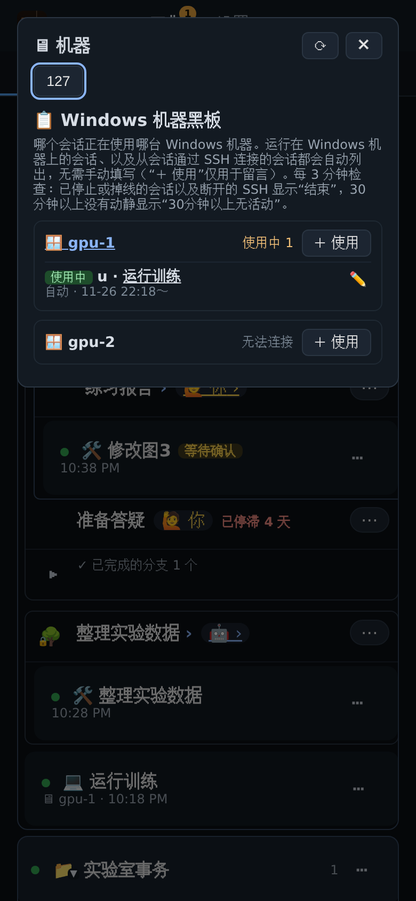

AI座 教程 进阶篇
本篇是基础篇的续篇。介绍会话增多时的整理方法（文件夹、工作树、巡览、按轮次）、与其他会话的连接、devbox 之外（mailbox、主机、root）以及其他机器的用法。
1. 用文件夹和工作树整理
在工作的 🌳 树中，可以把会话归入文件夹，还可以放在工作树（把要做的事按分支写下来的东西，第 3 章）的项目下面。文件夹中还可以再建文件夹，层数没有限制。

- 选中、展开：文件夹的行按一次是选中（边框发蓝光），再按一次选中的行是展开 / 收起。按 📁 右下角的 ▶/▼，不选中也能直接展开收起。行上的数字是其中会话的数量。展开的文件夹会连同其内容一起用边框围起来。
- 创建：按上方工具行的“＋ 📁”，工具行正下方会打开名称栏。写好名称后按“创建”（或 Enter）。如果选中了文件夹，就创建在其中。
- 放入、移动：按上方工具行的 ↕，每行左侧会出现 ⠿。按住 ⠿ 拖动，在文件夹的行上松开即可放入其中。在行与行之间松开，则排序到该位置。也可以把整个文件夹、整棵工作树放入另一个文件夹。完成后再按一次 ↕。
- 把会话放到工作树的项目下：把会话的 ⠿ 在树的项目上松开，就会放到该项目下面（项目和会话关联起来）。项目完成后，会话会回到文件夹中。
- 批量停止、继续：点按文件夹行上的 ●，会停止其中所有正在运行的会话。停止后点按灰色的 ●，会把当时停止的会话一起继续。
- 文件夹的 ⋯：✏️ 重命名、设置工作目录、🧑🤝🧑 共享整个文件夹、🗄 归档（整个文件夹）、🗑 删除（仅限空文件夹）。
- 会话行的 ⋯ 中有重命名、🔗 连接、🗄 归档、🗑 删除。
工作目录

可以为文件夹指定一个工作目录（服务器上的位置）。用 ⋯ →“设置工作目录”，写成 robot 这样。
- 位置用相对路径写。对 devbox 会话来说是
~/sandhome/robot，对主机会话来说是自己主目录下，对 root 会话来说是/root下的同名位置。 - 选中该文件夹后按上方工具行的 ＋ 🤖 AI，会打开开始会话的界面，放置位置已填入该文件夹。按开始后，会话会在工作目录的位置启动，并放入该文件夹。如果该位置不存在，会自动创建。
- 无论从哪里创建，在工作目录中启动的新会话都会自动放入该文件夹。
- 没有填写工作目录的文件夹，会使用上级文件夹的工作目录。
按文件夹共享
用 ⋯ →“🧑🤝🧑 共享整个文件夹…”，可以共享其中的所有会话（包括子文件夹以及之后放入的会话）。对象以及“只读/协作”的选择方法，与单个会话的共享（基础篇）相同。root 的会话会变为只读，mailbox 的会话只有在共享给指定用户时才会被共享（共享给“所有人”的文件夹对 mailbox 无效）。协作的文件夹中，mailbox 的 Claude、Codex 为协作，mailbox 的 shell 为只读。正在共享的文件夹会带有 🧑🤝🧑。
归档中的文件夹

在文件夹中归档的会话，在“🗄 打开归档”里也会排在同一文件夹下。用 📤 恢复后会回到原来的文件夹。整个文件夹归档的（⋯ 中的 🗄），可以用该文件夹行上的 📤 一起恢复。
所有项目都已完成的工作树，也会移到归档中。用 ↕ 也可以把它移到归档中的文件夹里。
2. 等待确认与巡览
Claude 正在等待回复（工作已完成、请求批准计划等）的会话，会在列表中名称旁边带有黄色的“等待确认”。

- 巡览栏一开始就在聊天标题正下方打开着。点按名称部分会关闭，再点按一次会打开（此浏览器会记住）。
- 用 ‹ 上一个、下一个 › 可以不返回列表，直接切换到前后的会话。顺序与列表（包括文件夹内）一致。
- 在选择栏中可以选择“全部、运行中、等待确认”。选择“等待确认”后，就可以只依次查看正在等待回复的会话。
- 用 ✏️ 重命名当前会话，用 🗄 归档，用 🗑 删除对话记录，然后直接转到下一个。
- 栏上方的小字表示该会话位于列表中的哪个文件夹。
3. 工作树与“按轮次”
工作树是把一项工作（例如“学会准备”）分成若干分支（“发表练习”“答疑准备”…）写下来的东西。每个分支都记着“现在轮到谁”（🙋 人、🤖 AI、💤 等待、✓ 已完成），并且可以和会话关联。AI座 中的 Claude 会在会话里自己添加分支，或把分支标为完成。
- 外观：树的根那一行带有 🌳（右下角的 ▶ 表示已收起、▼ 表示已展开、▽ 表示连已完成的分支也显示；左下角的 🔒 表示没有与任何人共享的树）。下面还有分支的分支，会连同其下内容一起用边框围起来。
- 选中、展开：与文件夹一样，分支的行按一次是选中，再按一次选中的行是展开 / 收起。选中后，该分支的整个边框会发光。
- 创建树：按上方工具行的“＋ 🌳”，在工具行正下方打开的栏中写下名称。如果选中了文件夹，树会放在该文件夹中；没有选中时会列在“未放入文件夹的树”中，用 ↕ 把它移到文件夹中（也可以用根部 ⋯ 中的“📁 放入的文件夹…”选择）。
- 添加分支：选中分支（或根）后按“＋ 🌳”。可以选择按标题添加，或关联到 GitHub 的 Issue。
- 用分支开始会话：选中分支后按“＋ 🤖 AI”。如果该分支还没有会话，开始的会话就成为该分支的负责会话（见下文“负责与协助”）。如果已经有会话，会在其下创建分支并由新会话负责。选中别人的会话所负责的分支时，会变为 🤛 接手（由自己的新会话来负责）。
- 分支的 ⋯：有 ✓ 标为完成（↺ 重新打开）、🧑🤝🧑 共享（可查看的人、可编辑的人）、⛓ 被什么卡住、💬 引用、📁 放入的文件夹（仅限根）、✏️ 重命名等。要创建的东西（分支、会话）不在 ⋯ 中，而是用上方工具行的 ＋ 创建。
- 分支旁边的“🙋 你”等标记表示现在轮到谁。红色的“已停滞 ◯ 天”表示轮次 3 天以上没有变化。用上方的“显示”可以筛选为“🙋 轮到你”或“⏳ 停滞 3 天”。
- 已完成的分支会收进“✓ 已完成的分支 ◯ 个”。
🧭 负责与 🤝 协助

这是由几个人（几个会话）共同承担一个分支时的形式。
- 🧭 负责：与分支关联的会话。只有负责会话会写分支的轮次（🙋、🤖、💤、✓）。
- 🤝 协助：帮助负责会话的会话。协助不会在树上写任何东西。负责会话移到别的分支时，协助也会一起移过去。
- 有负责会话的分支行上会显示“🧭 负责 · 🤝 协助”的名称，分支的边框中会带标题地排列负责和协助会话的行。
- 设为协助：按 ↕，把要让它帮忙的会话的 ⠿ 拖到有负责会话的分支（或负责会话的行）上松开。会弹出确认。目前只能在自己的会话之间设置。
- 停止、取消：分支 ⋯ 中的“🤝 停止协助”“🧭 取消负责会话”。用 ↕ 把会话拖到树的边框外松开也会取消。取消后的会话会回到文件夹中。
- 即使分支收起，负责会话的行也会显示（协助只显示数量）。展开后协助的行也会显示。
- 如果有可以分别说“已完成”的段落，就拆成分支；如果是一起做一个东西，就不拆分，用负责与协助。
🙋 按轮次

把会话和工作树的分支按轮到谁分组排列。从上往下依次是“轮到你”“AI 工作中”“等待（搁置）”，然后是树的分支中的“轮到你”。轮到别人的、还没有轮到任何人的，是收起来的。
- 用 ✓ 标为完成，用 💤 选择“搁置到什么时候”并搁置。用 ⏰ 提前唤醒搁置的项目。
- 点分支的 🌳，会跳到 🌳 树中的该分支。
- 标签页“工作”旁边的数字是轮到你的数量。手机收到通知时，就看这里。
4. 连接会话
用会话行的 ⋯（或聊天的 ⋯）中的 🔗，可以把两个会话（例如 devbox 中的 Claude 和主机上的 Claude）连接起来。连接后，只有当一方的 Claude 执行 talkto --to 对方名称 "…" 时，那段文字才会送到对方的输入框。连接三个以上时，只有加上 --all 才会发给所有人（两者都没有时不会发送，并报错）。并不会自动转发所有内容。用法 Claude 自己可以通过 talkto --help 查到。
5. devbox、mailbox、主机、root 的区别
在开始会话的界面中，“运行什么”（Claude、Codex、Shell）和“在哪里运行”（devbox、mailbox、主机、root、其他机器）是分开选择的。任何组合都可以启动（例如主机上的 Claude、mailbox 中的 Codex、mailbox 中的 Shell）。平时只用 devbox，一开始选中的就是“Claude”דdevbox”。mailbox 只在已配置的服务器上出现，root 只对拥有 root 级别通行密钥的人出现。
| 开始界面中的选择（运行什么 × 在哪里运行） | 运行位置 | 能看到的内容 | 通行密钥 | 用途 |
|---|---|---|---|---|
| Claude / Codex / Shell × devbox | devbox：自己专属的容器 | 只有 ~/sandhome | 不需要 | 所有日常开发 |
| Claude / Codex / Shell × mailbox | mailbox：与 devbox 分开的另一个容器（仅限已配置的服务器） | ~/mailbox 和 ~/sandhome（可读写） | 🔑 主机级别 | 邮件、个人信息等不想放在开发用 devbox 中的东西 |
| Claude / Codex / Shell × 主机 | 服务器本身，以自己的权限 | 真正的主目录（~/）等 | 🔑 主机级别 | 需要操作容器外的文件时 |
| Claude / Codex / Shell × root | 服务器本身，以 root 身份 | 全部 | 🔓 root 级别 | 管理服务器。仅对获许可的人显示 |
- 为什么平时用 devbox：在容器中，无论 Claude 执行什么，都到达不了自己
~/sandhome之外。所以即使跳过权限确认也是安全的。 - 为什么要把 mailbox 分开：在 devbox 中，通过
npm install装进来的他人的软件包也会运行。如果把邮件之类的信息放在那里，这些软件包也能读到。mailbox 是 devbox 看不到的另一个容器，对话记录也保存在~/mailbox一侧。反过来，mailbox 可以读写~/sandhome，因此可以和 devbox 交换文件（把邮件内容放进~/sandhome后，devbox 也能读到，放之前请先考虑）。 - 在“在哪里运行”中选择通过 ssh 连接的其他机器，就可以使用那台机器上的 Claude 或 shell。它与 devbox 不共享文件（第 9 章）。
- 在列表中，可以通过名称前的图标区分运行位置：🛠️ devbox、📫 mailbox、🏠 主机、🔒 root、💻 其他机器。
6. 设置界面与登录 Claude
第一次使用 Claude 之前，要在每个使用位置各登录一次 Claude。devbox 的步骤见基础篇的“登录 Claude”。这里说明其他位置，以及设置中的其他卡片。

打开方法
按界面顶部标签页中的设置。
按位置登录
- AI 登录卡片中，Claude、Codex 标题下有按位置分的行。每一行都可以登录、退出登录，步骤与 devbox 相同（打开 URL 授权，把代码粘贴到聊天中）。
- devbox：日常会话（🛠️）使用的 Claude。最先完成这里的登录。
- 主机：主机会话（🏠）使用的 Claude。与 devbox 是分开登录的。
- root：root 会话（🔒）使用的 Claude。只对获准使用 root 的人显示这一行（第 8 章）。
- Other hosts：通过 ssh 连接的其他机器（💻）各自的 Claude。只显示能连上的机器。如果几个人共用该机器上的账号，登录、退出登录会对使用这台机器的所有人生效。
- mailbox 的 Claude 在设置中没有对应的行，要在 mailbox 中登录。
- Codex 的行，是在打开 URL 后的页面中输入 AI座 聊天中显示的代码（方向与 Claude 相反）。使用 ChatGPT 账号。
- 该行显示“未登录”“Not logged in”（黄色）的位置，那里的 AI 无法运行。用 ⟳ 可以重新获取所有行的状态。
- 用卡片最下方的🧑🤝🧑 所有人的登录，可以查看本服务器上所有人在哪里登录了哪个 Claude 或 ChatGPT 账号（仅供查看）。root 的登录只对正在解锁 root 的人显示。
其他卡片
- 显示：显示语言（日本語、English、简体中文）。选择的语言会被保存，在其他设备上登录后也会相同。登录界面的下方也可以选择。
- 朗读与语音：回复朗读和语音模式的声音、语速。从麦克风菜单的“设置”也能来到这里。
- 通知：切换是否通知此设备。这是按设备的设置。
- 服务器特有的卡片：有的服务器会显示它自己的设置卡片。
- 账户：退出登录。
7. mailbox 与通行密钥（钥匙）的注册
像 mailbox、主机、root 这样要到 devbox 之外时，需要用通行密钥（由手机的指纹、面容识别或电脑的 PIN 保护的钥匙）解锁。这样即使 AI座 的登录被盗，没有你手边的设备也出不去。
注册通行密钥（首次一次）
- 从电脑用 SSH 登录服务器（基础篇 第 1 章）。对于只允许从内部网络 SSH 的服务器，要先进入内部网络。
ssh <ユーザー名>@<サーバー> aiza-passkey register - 会显示一个 URL。请在 5 分钟内，用想放置通行密钥的设备（平时使用 AI座 的手机等）的浏览器打开它。这个 URL 在外部也能打开（只有 SSH 需要内部网络）。
- 在“注册通行密钥”页面按注册通行密钥，用指纹、面容识别或 PIN 确认。
- 显示完成即可。想增加设备时，在那台设备上再执行一遍同样的步骤。
aiza-passkey list 查看，当前状态可以用 aiza-passkey status 查看。使用 mailbox
- 在开始会话的界面（基础篇）中，“运行什么”选 Claude，“在哪里运行”选 mailbox（mailbox 只有已配置的服务器才有）。工作目录从自己的
~/mailbox开始，可以和 Claude 一样选择子目录，或用＋新建。 - 按开始后，会弹出设备的通行密钥确认。用指纹等确认后，右上角出现 🔑 表示已解锁，会话随即启动。
- 仅限第一次在 mailbox 中使用 Claude 的会话，mailbox 中的 Claude 会要求登录。用 🖥️ 打开画面面板，用按键行的 ↑ ↓ ⏎ 选择登录方式（Claude 账号），打开出现的 URL 并授权，把显示的代码粘贴到输入框中点执行。接着如果出现是否跳过权限确认的确认，选择同意的那一项。第二次起不会再出现。
- 之后的用法与 devbox 中的 Claude 相同。
~/mailbox一开始是空的，需要的工具（读取邮件的脚本等）请自己准备，或者请 Claude 准备。
- 解锁状态会持续到你锁定或经过 2 小时为止。
- 点按右上角的 🔑 可以立即锁定。锁定期间打开 mailbox 的会话，会出现“🔒 … 解锁”的提示条，点按它即可解锁。
- devbox 中的 Claude 看不到 mailbox。反过来，也请不要下指令把 mailbox 的内容带到 devbox 中。
8. 成为 root 的步骤
root（服务器的管理员权限）只有管理员许可的人才能使用。途径有两种，都需要本人操作。
在 AI座 中使用“root”这个位置
- 请管理员帮忙。管理员在服务器上执行以下命令，并把显示的 URL 交给你。
sudo aiza-passkey register <ユーザー名> --tier root - 在 5 分钟内用自己设备的浏览器打开收到的 URL，按注册通行密钥。这就是 root 级别的通行密钥（也可以用于解锁主机和 mailbox）。
- 重新加载 AI座 后，开始会话界面的“在哪里运行”中会出现 root。选择“Shell”和“root”并按开始，用通行密钥确认后右上角会变为 🔓，root shell 随即打开。
- 要以 root 使用 Claude（选择“Claude”和“root”），需要先在设置“AI 登录”中“Claude”下的 root 一行登录 Claude（第 6 章）。
通过 SSH 使用 sudo
在服务器上获准使用 sudo 的人，可以用 SSH 登录后使用 sudo。许可给谁由管理员决定。
9. 其他机器与 Windows 机器黑板
如果有通过 ssh 连接到服务器的其他机器（装有 GPU 的 Windows 机器等），它们会列在开始会话界面的“在哪里运行”中。选择后，可以在那台机器上运行 Claude 或 shell。连不上的机器（关机等）不会显示。
- 在 Windows 机器上，可以在开始会话的界面中选择工作驱动器和目录（
C:、D:…）。也可以选择接着之前的对话。 - 用 🐚/🪟 切换，选择在没有画面的地方（🐚）运行，还是在已登录的桌面（🪟，运行带画面的应用时）上运行。
- 其他机器上的会话，行上带有 💻，第二行显示 🖥 机器名。
Windows 机器黑板

Windows 机器由几个人共用，所以有一块黑板，可以看出“哪台机器正被谁的哪个会话使用”。在工作 🌳 树最下方的 🖥 机器中打开。无论是人还是 Claude，使用前只要看一下黑板即可，不需要填写。
- 自动：在该 Windows 机器上运行的 AI座 会话会自动列出。
- SSH（自动）：在 devbox 或主机的会话中用
ssh、scp、sftp、rsync连接 Windows 机器时，也会自动列出。连接结束后会变为“结束（SSH 已断开）”。 - 每 3 分钟检查一次，已停止或掉线的会话显示“结束”，聊天 30 分钟以上没有动静的显示“30分钟以上无活动”。
- 只有想留下要做的事的备注时，才需要用 ✏️ 补充，或用“＋ 使用”手写（手写条目会一直保留，直到自己“取消”）。在会话中可以用
aiza-board查看黑板。 - 使用前请先看黑板，如果有人在用，请和对方商量。
10. 遇到问题时
| 症状 | 处理方法 |
|---|---|
| 找不到会话 | 可能在文件夹中，或在工作树的分支下。点按文件夹的行展开。已停止的会话勾选“也显示已停止的会话”后会显示。也确认一下“显示”是否为“全部”。也看看归档中（第 1 章） |
| mailbox 或主机的会话要求“解锁”而无法继续 | 确认是否注册了通行密钥、是否在这台设备上注册的（第 7 章）。如果出现了锁定中的提示条，点按它 |
| 名称变成了 🔒 | mailbox、主机、root 的会话在解锁前会隐藏名称。从列表上方的提示条解锁 |
| Claude 没有任何回复、要求登录 | 在设置界面确认该位置那一行是否显示“未登录”（黄色），然后登录（第 6 章） |
| 其他机器没有出现在“在哪里运行”中 | 连不上那台机器（电源、网络）。找管理员商量 |
| 想知道 Windows 机器是否有人在用 | 看最下方 🖥 机器中的黑板（第 9 章） |
| 通知太多 | 在 🙋 按轮次中，把已完成的标为 ✓，可以稍后处理的用 💤 搁置（第 3 章）。如果这台设备不需要通知，就在设置的“通知”中关闭 |
| 不清楚基本操作 | 基础篇的“遇到问题时” |